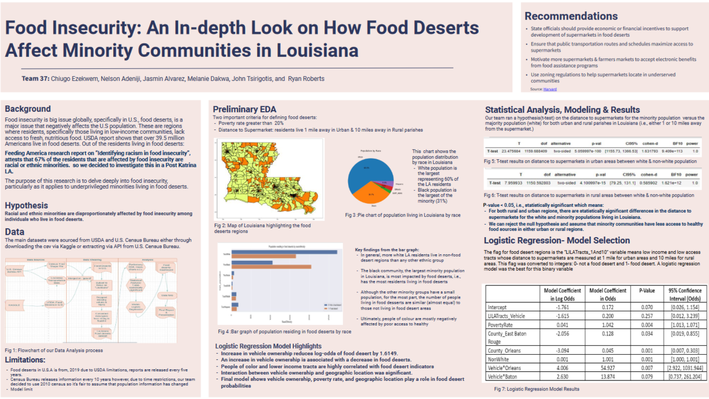

PROJECT OUTLINE
Our goal for this project was to delve deeper into Food insecurity particularly as it applies to underprivileged minorities living in food deserts in Louisiana. Some of the social variables being considered include racial segregation, access to public transportation, employment, and income.
This research was done in collaboration with a team of 5 analysts and it involved deep exploratory analysis using python libraries like seaborn, Matplotlib and Geopandas as well as building a logistic regression model, the design of an interactive dashboard and the presentation of our results using a datafolio, i.e. science fair poster, and presentation to our stakeholdersTAGS- Python Libraries used- Pandas | Seaborn| Scikit Learn| Pingouin| Matplotlib| Plotly| Geopandas| Folium| Statsmodels
MY ROLE
I worked as a data analyst of the team so I performed the cleaning and performing exploratory data analysis on the data to uncover insights and trend and also, using research, determined the scope of what a food dessert actually is and the factors involved in categorizing what a food desert region is based on the data available.
I also worked on the statistical analysis by runnig a hypothesis test on the distance to supermarkets between our chosen demographic groups in both urban and rural parishes in Louisiana to check for any significance that would bolster our analysis. At the conclusion of our project, I synthesized all our finding from data cleaning, exploratory & Statisitcal analysis as well as Modelling results to a science fair poster,i.e. datafolio as part of our presentation to our stakeholders.DATAFOLIO
DASHBOARD
The team created the dashboard below that visualized our findings